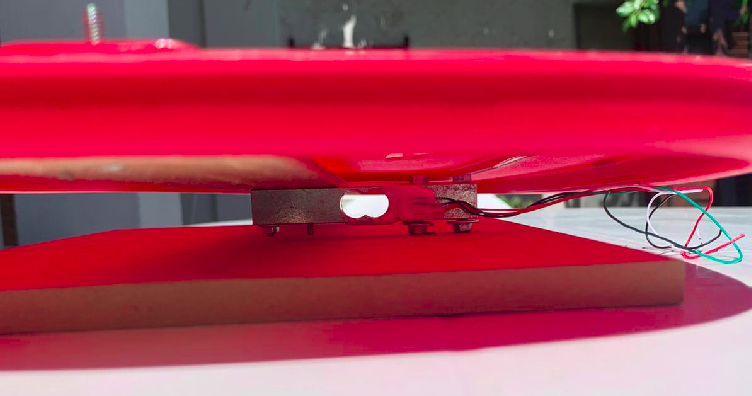

16 de agosto al 9 de setiembre, 2021
Se definió el alcance del proyecto, eligiendo el hardware a utilizar teniendo en cuenta el presupuesto disponible de UYU$4000. Se reflejan los tiempos y fechas estimados en un diagrama de Gantt, que toma en consideración los recesos académicos y tiempos laborales de los miembros del equipo.
Aquí se puede leer el informe del Anteproyecto, que resume la motivación, idea y compromiso del proyecto.
10 de setiembre al 23 de setiembre, 2021
Durante estas semanas nos familiarizamos con las librerías y entornos a utilizar para el desarrollo del software del proyecto. En particular, investigamos sobre la integración entre Thingsboard y el ESP8266, la toma de datos de los distintos sensores a bordo del ómnibus, el conteo de las direcciones MAC y el armado del JSON para el envío de los datos obtenidos.
El sniffer para la detección de direcciones MAC funciona colocando el ESP8266, primero en modo ESTACION y luego en modo PROMISCUO para que pueda escuchar el trafico WiFi a su alrededor. Esto se hace en el Setup del codigo, donde tambien se asigna una funcion de CallBack la cual recibira y procesara los paquetes interceptados por el ESP.
En el Loop del programa, lo que hacemos es simplemente cambiar cada cierto tiempo el canal de WiFi en el que estamos escuchando y esperar un momento para que se puedan captar paquetes antes de volver a cambiar.
Cada vez que se intercepta un paquete, se llama a la funcion "promisc_cb" la cual parsea la informacion recibida y dependiendo del tipo de paquete (si es proveniente de un BEACON o de un CLIENT) guarda la estructura correspondiente en un array.
Estos elementos contienen, entre otros datos, la direccion MAC del dispocitvo que generó el paquete, que es lo que nos interesa en este caso para poder identificar la cantidad de dispositivos que se encuentran en un area contando la cantidad de direciones MAC distintas encontradas.
También se verifica regularmente la antigüedad de los elementos guardados y si alguno excede un tiempo máximo desde la última detección, este elemento se considera fuera de rango y se elimina.
20 de setiembre, 2021
Comenzamos la programación sobre el ESP8266 para la lectura de sensores y direcciones MAC. Además probamos la comunicación con Thingsboard usando la libreria de PubSubClient.
Se probó la celda de carga junto con el módulo HX711 y el sensor MQ2 utilizando la primera versión de código obteniendo buenos resultados.
En los siguientes videos se muestran los prototipos de prueba para los sensores de distancia utilizados en las puertas de subida y bajada del ómnibus. Para probar el funcionamiento de los sensores alcanza con conectarlos a 5V y verificar la detección de objetos.
En el primer video se muestra la prueba con el sensor de proximidad IR como viene de fábrica. De esta manera el sensor mide el reflejo de la señal y cuando detecta un objeto envía una señal en HIGH.
En el segundo video se hace la prueba con el sensor desarmado ubicando un LED frente a otro, de manera de que actúe como un sensor de barrera, enviando una señal en LOW cuando detecta un objeto.
Ambos son distintos métodos de detección y habiendo hecho estas pruebas decidimos utilizar el sensor original, dado que los dos funcionan correctamente y no hay diferencias notorias importantes.
30 de setiembre, 2021
Nos reunimos a sacar medidas y planear el armado de la maqueta y los prototipos de prueba.
Para darle un agregado al Dashboard de Thingsboard, se encontraron widgets que permiten generar gráficas a partir de un histórico de datos, que si bien no recolecta en su totalidad los datos medidos, puede llegar a mostrar información relevante en función de datos pasados.
En el video se puede ver la prueba del sensor de CO2, mostrando la lectura en el monitor serial de Arduino y en el dashboard de Thingsboard.
04 de octubre, 2021
Durante esta semana avanzamos en la construcción de la maqueta haciendo la base y parte del cableado de componentes.
Previamente habian sido probados los componentes por separado, usando un código individual para cada uno. Esta semana comenzamos las pruebas utilizando el mismo código para todos, habiendo podido verificar el envío de medidas del sensor de CO2 via el ESP8266 hacia Thingsboard, comparando desde el Monitor Serial del IDE de Arduino la medida enviada con la mostrada en el Dashboard de Thingsboard.
Para poder programar el ESP8266 utilizando el IDE de Arduino seguimos las instrucciones mostradas en este tutorial: Getting Started w/ NodeMCU ESP8266 on Arduino IDE.
Las librerías que se instalaron desde el IDE de Arduino son: PubSubClient de Nick O'Leary, para la comuniación con ThingsBoard y ArduinoJson. Para utilizar la libreria String se la puede importar directamente con la linea: #include <string.h> (notar que es "s" minúscula.
06 de octubre, 2021

Se continúa con el proceso de construcción de la maqueta.
En las imágenes se puede ver lo que sería la base del ómnibus, a la que va conectada la celda de carga, y el ómnibus en sí mismo donde estarán el sensor de CO2, los sensores IR para las puertas y el display para la pantalla exterior del ómnibus.
Se prueba y corrige el código para tomar datos de la celda de carga en conjunto con la toma de datos del sensor de co2 y el resto del código de las MACs.
Se agrega un LED conectado al pin DT del HX711 para visualizar cuando toma medidas (LED prendido completamente) y cuando no está midiendo (LED parpadeando).

{kind=link}
{kind=link}
10 de octubre, 2021
Se automatiza el código de calibración de la celda de carga según un parámetro que será seteado desde ThingsBoard. La idea es desde ThingsBoard activar un modo "Debug" que corre la función de calibración de la celda de carga. Tenemos definida una variable que dice que el peso de calibración es, por ejemplo, 500g. Al entrar en modo calibración ponemos sobre la celda de carga un objeto que pesa 500g, el sensor lo lee y guarda el valor para tener de referencia para todas las demás medidas.
Se considera la posibilidad de usar un regulador de 3.3V y se investiga sobre el consumo de los sensores.
Se agrega al código del main un modo de WIFI_DEBUG de WiFi que permite ingresar la SSID y la PASSWORD de la red a través del monitor serial. Para esto es necesario poner el monitor serial en un baud-rate de 11500 y la terminación de linea como “No line ending”.
Implementamos una rule chain propia en ThingsBoard, ésta consiste en recibir y filtrar un mensaje recibido por telemetría de un device, y en caso de ser este el sensor de CO2, consultar por su valor. Si éste superior al parámetro máximo de este device, prende una alarma, en caso contrario guarda la telemetría.
12 de octubre, 2021
Se corta el "techo" de la maqueta del ómnibus para facilitar el acceso al interior a la hora de hacer movimiento de pasajeros. La parte cortada se utilizará como tapa para cubrir el ómnibus cuando se hagan pruebas con el sensor de CO2. Se cortó también la caja que contiene al Servo que servirá de escotilla.
Probamos el código de calibración de la celda de carga junto con la celda ya en la confirguación que será usada en la versión final de la maqueta. Para eso utilizamos un objeto de peso conocido y comparamos la medida de nuestro programa con la de una balanza de cocina, como se muestra en el siguiente video.
18 de octubre, 2021
Se comienza el diseño de un nuevo dashboard para set up, con la intención de hacer las configuraciones aparte y dejar el dasboard principal para la visualización de los datos en tiempo real y algún otro control esencial.
Seguimos implementando las rule chains para comenzar a probar el procesamiento de los datos del nivel de CO2 y el peso del ómnibus.
Para agregar más facilmente al IDE de Arduino las librerías usadas en la implementación del código en el ESP8266 agregamos dentro del repositorio del proyecto un .zip con las carpetas de las librerías externas que estamos usando (PubSubClient, ArduinoJson, etc). Cuando se inicia un IDE que no tenga instaladas las librerías, en lugar de usar el Libraries Manager, se descomprime el .zip y se copia su contenido en la carpeta "Documents/Arduino/Libraries" en Windows, o "Home/Arduino/Libraries" en Linux.
20 de octubre, 2021
Se investiga sobre APIs para verificar las direcciones MAC y distinguir entre las que corresponden a dispositivos conectados a la red y las que se mandan aleatoriamente cuando se está desconectado.
Se hacen pruebas con el display que mostrará mensajes hacia afuera del ómnibus. Decidimos utilizar la librería LiquidCrystal_I2C, que se puede encontrar en el siguiente repositorio: johnrickman/LiquidCrystal_I2C.
Se decide crear una nueva sección en la página web para documentar lo hecho en ThingsBoard, de manera de facilitar la reproducción del proceso. La sección puede accederse desde aquí: Documentación de Thingsboard.
27 de octubre, 2021
Se programa y testea la función que permite recibir comandos desde ThingsBoard en el ESP8266. En principio la prueba se hizo prendiendo y apagando desde el dashboard el LED de la placa.
Se prueba el código de las interrupciones utilizado para detectar subida y bajada de pasajeros con los sensores IR en las puertas del ómnibus.
Para que las interrupciones funcionen correctamente en el ESP8266, es necesario poner la función de interrupción en la memoria RAM, por lo que en la declaración de la función hay que poner “ICACHE_RAM_ATTR”. Ejemplo: ICACHE_RAM_ATTR void miFuncionDeInterrupcion().
Esto es necesario porque de lo contrario se produce un error en tiempo de ejecución que resetea el ESP.
Los pines usados para las interrupciones son declarados como INPUT_PULLUP para que siempre se encuentren en estado HIGH. Sin embargo, los pines usados parecen no tener estas resistencias de pull-up internas ya que se observaron inconsistencias a la hora de activar las interrupciones usando un botón. Esto de todas formas no es un problema en nuestro caso ya que los sensores usados tienen niveles bien definidos para sus dos estados posibles (salida HIGH o LOW pero nunca flotando) pero es un dato importante a tener en cuenta por si estos pines se dejan sin conectar por algun motivo.
28 de octubre, 2021
Trabajamos en ThingsBoard utilizando el modo debug de los nodos en las Rule Chain para lograr armar una regla que prenda y apague un widget (que simula un LED) en el dashboard, según los niveles de CO2 recibidos.
En la siguiente imagen podemos ver una captura del monitor serial de Arduino mostrando las direcciones MAC capturadas por el Sniffer:
{kind=link}
{kind=link}
Para utilizar el código del Sniffer el ESP debe pasar de modo estación a modo promiscuo y para esto necesita apagar el WiFi. Esto quiere decir que mientras leemos las direcciones MAC no es posible mantener la comunicación con ThingsBoard. Por esta razón decidimos agregar al sistema un ESP8266-01, que será el encargado de manejar el Sniffer y el resto del código (lectura de sensores, actuadores, comunicación con Thingsboard) se mantendrá en el ESP8266.
31 de octubre, 2021
Se escribe el código encargado de recibir la orden de abrir y cerrar la escotilla del ómnibus según el estado de un switch en el dashboard de Thingsboard. Se prueba con éxito el mover el servo, que abrirá la escotilla, mediante el uso del widget en el dashboard.
También se escribió el código que maneja la actualización de atributos desde Thingsboard para utilizar en el ESP para acciones como ser entrar en modo calibración para la celda de carga o el peso del objeto que se utilizará para dicha calibración.
Se hicieron los agujeros para las puertas del ómnibus y se trabaja en el cableado de los sensores.
{kind=link}
02 de noviembre, 2021
Se programa una función para encender los LEDs del cartel que indica la apertura de ventanas abordo del ómnibus.
El atributo que recibe el ESP maneja el encendido y apagado de los LEDs, y ese atributo es generado en Thingsboard mediante una Rule Chain. Esta Rule Chain compara el nivel de CO2 actual con el máximo nivel previamente definido y en caso de estar sobrepasado pone aviso mediante un atributo de alarma.
A su vez este atributo es también visualizado en el dashboard en forma de LED, tornándose de color rojo cuando se excede el máximo nivel de CO2.
En los siguientes videos se puede ver la prueba de la alarma de CO2, el movimiento del servo para la escotilla y el prendido y apagado del built-in LED y otro LED.
06 de noviembre, 2021
Se prueba la comunicación serial entre el NodeMCU y el ESP8266-01.
Se comienzan pruebas de envío y recepción de direcciones MAC a ThingsBoard. En principio se crea una rule chain que consume la API Mac Vendors para decidir si las direcciones MAC recibidas corresponden a un dispositivo real o si son direcciones MAC aleatorias de las que envían los dispositivos cuando no están conectados.
09 de noviembre, 2021
Se implementa el ESP8266-01 como un dispositivo separado en ThingsBoard luego de experimentar problemas con la conexión fisica entre ESPs. Actualmente cada ESP actúa por separado, uno manejando las funciones de sensores y actuadores y el otro cumpliendo las funciones de sniffer de red, reportando por separado a ThingsBoard los primeros 6 dígitos de todas las direciones MAC encontradas.
13 de noviembre, 2021
Se sigue avanzando en la construcción de la maqueta.
Se crea una rule chain en ThingsBoard para interpretar los datos de la celda de carga que devuelve el peso actual del ómnibus y convertir esta información en cantidad de pasajeros.
En la librería PubSubClient se hace una modificación en PubSubClient.h agrandando la cantidad de bytes a enviar por MQTT, ya que teniendo en funcionamiento el sistema durante muchas horas enviando datos se alcanzaba el máximo permitido obteniéndose el siguiente error: "Not published. Please add #define MQTT_MAX_PACKET_SIZE 2048 at the beginning of PubSubClient.h file"
14 de noviembre, 2021
Se crea una rule chain que recibe los datos de los sensores en las puertas de subida y bajada del ómnibus y guarda la cantidad de pasajeros en un atributo en ThingsBoard. En el siguiente video se puede ver como va variando la telemetría en Thingsboard al pasar la mano por las puertas del ómnibus.
17 de noviembre, 2021
Se soldaron todos los sensores y se ajustan agarres del techo del ómnibus y la escotilla. En el siguiente video podemos ver el prototipo de la escotilla y el estado actual de la maqueta.
{kind=link}
18 de noviembre, 2021
Nueva rule chain para conteo de macs que hay que probar. Esta rulechain recibe una señal de inicio de envio de macs, recibe las macs de a una, cada una en un mensaje mqtt distinto, y llama a otra rulechain que consulta la API de fabricantes de MAcs. Cuando recibe luego una señal de fin, toma la cantidad de macs verificadas hasta el momento como el numero de macs reales y lo guarda. Con esto se obtiene el numero de pasajeros segun la cantidad de MACs.
Se modifica el codigo del sniffer para que envie las MACs en el formato que espera la rulechain mencionada.
Avances en la maqueta: Se fija la escotilla al techo de la maqueta, se hace un agujero para el pasaje de el cable de alimentacion hacia el interior de la maqueta. Además se oloca termocontraible en los sensores de distancia y una superficie oscura del otro lado de la puerta para minimizar la interferencia causada por luces del ambiente.
21 de noviembre, 2021
Se cambia el modo de las interrupciones de las puertas de RISING a FALLING porque el sensor de la puerta trasera produce una señal HIGH con mucho ruido, lo que causaba que se dispararan muchas interrupciones juntas. Cambiando el modo a FALLING, las interrupciones se disparan cuando la señal pasa a ser LOW, la cual el sensor produce de manera mas limpia.
Se descubre que para el correcto reseteo de la placa NodeMCU, es necesario que el pin asignado al sensor de la puerta trasera este en LOW. Debido a que el estado por defecto del sensor es HIGH, es necesario mantener el sensor activo mientras se ejecuta un reseteo de la placa para que este sea exitoso.
22 de noviembre, 2021
Se agregan atributos al Dashboard para manejar lo que mostrará el display del ómnibus: número de línea y destino, y un mensaje para indicar si el ómnibus va lleno. También se implementa el código en el ESP para recibir estos cambios y reflejarlos en el display.
Se agrega un atributo, que se setea también desde el Dashboard, que indica cuál tiene que ser la mínima variación de peso para que se envíe telemetría de la celda de carga hacia Thingsboard, para evitar enviar actualizaciones permanentemente por variaciones insignificantes de peso.
La escotilla ya podía abrirse manualmente desde el Dashboard pero ahora se agrega la función de que cuando el nivel de CO2 alcanza el máximo, la escotilla se abre automáticamente. Una vez abierta de esta manera, la escotilla permanecerá abierta por más que el nivel de CO2 baje, para prevenir que vuelva a subir. Puede igual ser cerrada manualmente desde el Dashboard o desde el mismo ómnibus.
Nueva rule chain para prender el LED que avisa al chofer si se alcanzó el máximo de pasajeros a bordo.
27 de noviembre, 2021
Se crea un dashboard de debug para ver los valores de la telemetría y los atributos todos en el mismo lugar.
Se modificó la base del ómnibus para que la celda de carga estuviera mejor ajustada, como puede verse en las imágenes de abajo.
{kind=link}
02 de diciembre, 2021
Pruebas con las rule chain que se encargan de las direcciones MAC y del total de pasajeros. El envío de MACs desde el ESP tuvo que enlentecerse porque la velocidad a la que enviaba las lecturas no le daba tiempo a la rule chain a procesar los llamados a la API.
Diseño de poster para promoción del proyecto. Se decidió hacer un poster informativo que resuma las funcionalidades del proyecto.